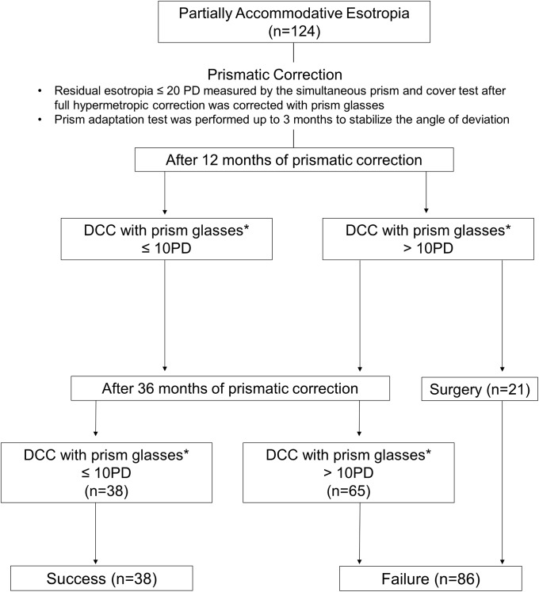
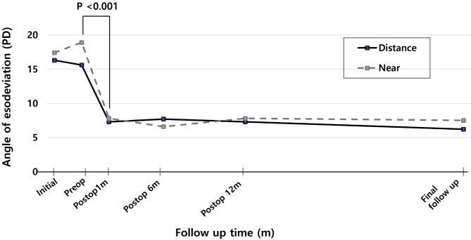
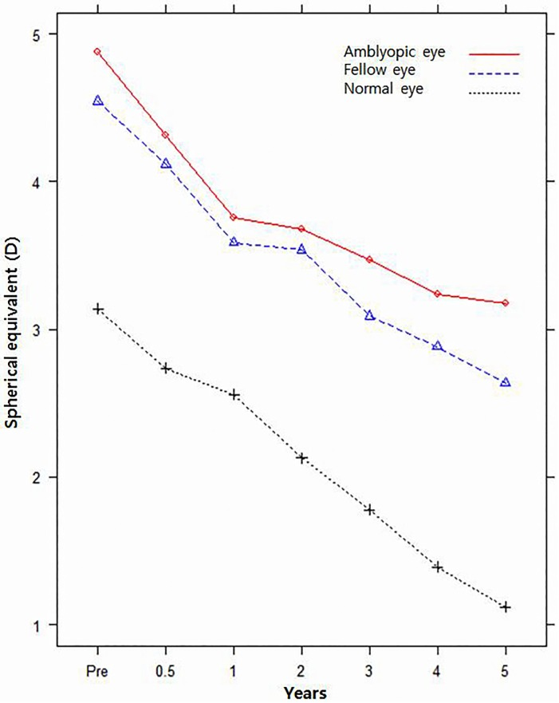

486 — Lác trong điều tiết sau khi đeo kính: theo dõi, lác phần còn lại, lăng kính & ngưỡng mổ / Follow-up of accommodative esotropia after glasses: residual deviation, prisms and surgical thresholds
Tags: pattern:lac pattern:lac-trong pattern:lac-dieu-tiet pattern:khuc-xa vung:mat protocol:do-goc-lac protocol:khuc-xa-ly-liet score:goc-lac-PD incidentaloma:khuc-xa-tre
Mức chắc chắn (certainty): tổng hợp y văn (literature synthesis) — tự biên từ 1 tổng quan hệ thống 34 nghiên cứu/3.877 trẻ (PMC12178246), 1 thuần tập 124 trẻ đeo lăng kính (PMC6886759), 2 nghiên cứu phẫu thuật 28 và 68 trẻ (PMC11833039, PMC5147847), 2 nghiên cứu kính hai tròng/Botox (PMC3268167, PMC7048305), 1 nghiên cứu thích nghi lăng kính trước mổ (PMC11129379), 1 nghiên cứu tái phát nhược thị (PMC3959076) và các nghiên cứu khúc xạ dài hạn (PMC4849857, PMC4179119); chưa gắn một ca nguyên văn đơn lẻ của nhóm.
Bài này nối tiếp 483 – Sàng lọc thị lực trẻ mầm non, 485 – Khúc xạ lý liệt và 472 – Phẫu thuật lác ở trẻ sinh non/ROP. 483 phủ phát hiện lác/khúc xạ; 485 phủ đo khúc xạ lý liệt và nguyên tắc kê kính; 472 phủ kỹ thuật mổ lác ở trẻ sinh non. Bài 486 trả lời câu hỏi còn trống: sau khi đã đeo kính đủ, theo dõi thế nào, khi nào coi là thất bại, khi nào thêm lăng kính/kính hai tròng và khi nào mổ phần lác còn lại.
1. Tổng quan bệnh học – cơ chế hình ảnh
- Cơ chế (pathophysiology): viễn thị chưa chỉnh → ảnh mờ trên võng mạc → điều tiết (accommodation) → theo tỷ lệ AC/A (accommodative convergence/accommodation), quy tụ tăng → lác trong. Chỉnh đủ viễn thị bằng kính lý liệt cắt vòng lặp điều tiết–quy tụ, nên phần lớn trẻ thẳng mắt mà không cần mổ. Khi còn một thành phần không do điều tiết (cơ học, cảm giác, thần kinh), chỉnh kính không đủ → gọi là lác trong điều tiết một phần (partially accommodative esotropia — PAET).
- Vì sao phải theo dõi sau kính, không chỉ "kê kính rồi hẹn 1 năm": ba biến số thay đổi độc lập theo thời gian.
- Khúc xạ: viễn thị tăng đến khoảng 7–8 tuổi rồi giảm dần đến người lớn; ở thể khởi phát sơ sinh, sau 7 tuổi có dịch chuyển cận thị −0,43 D/năm, còn thể khởi phát muộn (18–48 tháng) không dịch chuyển trong 7–12 tuổi (Wang et al., IOVS 2016, PMC4849857). Kính cũ có thể thiếu độ đúng lúc trẻ cần nhất.
- AC/A: giảm dần theo tuổi nhưng vẫn cao hơn ở nhóm phải tiếp tục kính hai tròng (từ 5,9 → 4,5 so với 4,4 → 2,7 ở nhóm bỏ được; Kim et al., Korean J Ophthalmol 2012, PMC3268167).
- Dung hợp – nhược thị: thẳng mắt không bảo đảm có lập thể; nhược thị có thể tái phát sau khi ngừng điều trị.
- Ngưỡng định lượng nằm lòng (theo thứ tự quyết định):
- Chỉnh kính đủ là điều trị bậc 1 hiệu quả nhất: tổng quan hệ thống 34 nghiên cứu, 3.877 trẻ (tuổi trung bình 4,72 ± 2,08), thành công định nghĩa lệch < 10 PD: chỉnh kính quang học 79,31% (theo dõi trung bình 5,57 năm), phẫu thuật cơ 71,4% (2,89 năm), Botox 61,24% (3,15 năm) (Alrasheed et al., PeerJ 2025, PMC12178246).
- Ngưỡng mổ sau chỉnh kính đủ: tổng quan trên kết luận còn lệch > 15 PD sau chỉnh viễn thị lý liệt đủ là nhóm cần mổ (PMC12178246). Thực hành thường dùng > 10 PD kèm dung hợp kém, hoặc > 15 PD bất kể dung hợp.
- Lăng kính cho lác còn lại ≤ 20 PD: 124 trẻ, theo dõi ≥ 3 năm: 30,6% thành công (góc còn lại ≤ 10 PD), chỉ 7,3% bỏ được lăng kính; yếu tố dự báo thành công là ít lệch ẩn (latent deviation) khi thích nghi lăng kính (P = 0,001) và dung hợp gần tốt trên Worth 4-dot (P = 0,033); lập thể cải thiện 60,5% vs 27,9% (P = 0,001) (Choe HR et al., PLoS One 2019, PMC6886759).
- Mổ một cơ trực trong cho PAET ≤ 25 PD: 28 trẻ, góc trước mổ 15,5 ± 3,7 PD, liều lùi 5,6 ± 0,7 mm, theo dõi 4,4 ± 3,1 năm: thành công 53,6% (định nghĩa ≤ 5 PD); thành công gắn với tuổi mổ lớn hơn (P = 0,005), đeo lăng kính lâu hơn trước mổ (P = 0,030) và liều lùi lớn hơn (P < 0,001) (Lee D et al., Sci Rep 2025, PMC11833039).
- Sau mổ, khúc xạ vẫn tiếp tục đổi: 68 trẻ PAET, theo dõi 4,89 ± 1,74 năm, −0,284 ± 0,411 D/năm; trẻ bỏ được kính viễn thị ở tuổi 9,41 ± 2,74; mắt nhược thị giảm độ ít hơn mắt còn lại (P = 0,0002) (Oh SY et al., PLoS One 2016, PMC5147847).
- Viễn thị giảm không có nghĩa hết cần kính: 92 trẻ lác điều tiết có khúc xạ giảm < +2,00 D; 26 trẻ (28%) vẫn lác ≥ 10 PD khi bỏ kính, và nhóm này có lập thể kém hơn rõ (Lang I dương 3,8% vs 33,3%, P = 0,003) (Kim et al., Korean J Ophthalmol 2014, PMC4179119).
- Kính hai tròng cho AC/A cao: 16 trẻ, 38% bỏ được kính hai tròng ở tuổi trung bình 10,8 (6,5–15,4), 62% phải tiếp tục đến 13,8 tuổi (PMC3268167).
- Botox so với mổ ở PAET + AC/A cao: 84 trẻ (48 Botox, 36 mổ lùi + cố định sau), thành công 93% vs 72% ở 1 năm (P = 0,01), nhưng khác biệt góc lệch chỉ 0 vs 5 PD — không khác biệt có ý nghĩa lâm sàng lớn (Tejedor et al., PLoS One 2020, PMC7048305).
- Thích nghi lăng kính trước mổ 4 tuần: 75 trẻ lác (gồm 10 PAET), 58,7% tăng góc ≥ 5 PD, trung bình +9,4 PD; thành công sau mổ 90,9% (nhóm tăng) vs 96,8% (nhóm không tăng), P = 0,316 — giúp lộ góc ẩn để chọn liều, không làm tăng thành công (Han et al., BMC Ophthalmol 2024, PMC11129379).
- Nhược thị tái phát: sau khi ngừng điều trị thành công, 12,74% tái phát trong 1 năm; tuổi bắt đầu điều trị muộn hơn làm tăng nguy cơ (Saxena et al., Indian J Ophthalmol 2013, PMC3959076).
- Vai trò của hình ảnh học (imaging) — không phải để đo lác: chẩn đoán lác điều tiết là lâm sàng + đo khúc xạ + đo góc. Hình ảnh chỉ vào cuộc khi lác không điển hình: lác không đồng nhất (incomitant), lác dọc/xoắn, đau – sa mi – ảo thị, đề kháng với kính, hoặc nhìn đôi đột ngột — lúc đó cần MRI hốc mắt T1 fat-sat sau tiêm + T2 fat-sat, lát ≤ 1 mm để loại trừ bệnh cơ hốc mắt (myositis, Graves), u hốc mắt, tổn thương thần kinh sọ. Trong lác điều tiết đơn thuần, CT/MRI không có chỉ định — chụp thừa không làm thay đổi quyết định.
2. Mẫu hình + chẩn đoán phân biệt theo "kiểu còn lác sau kính" (gamut)
Sau 6–8 tuần đeo kính đúng độ, trẻ rơi vào một trong 5 kiểu — mỗi kiểu có quyết định khác nhau. Gợi nhớ 5P:
- P1 — Perfect (thẳng hoàn toàn, lác điều tiết thuần): góc ≤ 10 PD ở cả xa và gần khi đeo kính. Tiếp tục kính + theo dõi; không mổ. Đây là nhóm chiếm đa số trong 79,31% thành công của chỉnh kính (PMC12178246).
- P2 — Partial (lác một phần, còn lác cả xa và gần): góc còn lại hằng định, không giảm thêm sau 6 tháng chỉnh đủ → thành phần không do điều tiết. Mổ khi > 15 PD, hoặc > 10 PD + dung hợp kém/lập thể kém (PMC12178246, PMC11833039).
- P3 — Plus (AC/A cao, chỉ lác khi nhìn gần): xa thẳng, gần > 10 PD, AC/A cao (thường > 6 PD/D) → kính hai tròng (add +2,50 đến +3,00 D — cần kiểm chứng theo phác đồ địa phương). 38% bỏ được sau tuổi 10,8; số còn lại tiếp tục đến 13,8 tuổi (PMC3268167).
- P4 — Prism (lác còn lại nhỏ, dung hợp còn tốt): ≤ 20 PD, đặc biệt ≤ 10 PD, thích nghi lăng kính cho thấy ít góc ẩn, Worth 4-dot gần tốt → thử lăng kính 12 tháng. Thất bại nếu góc > 10 PD sau 12 tháng hoặc dung hợp xấu đi (PMC6886759).
- P5 — Post-op/Progressive (quá chỉnh hoặc tái phát): sau mổ lác ngoài thứ phát (consecutive exotropia) do giảm độ viễn thị theo tuổi hoặc lùi cơ quá tay; hoặc tái lác trong khi bỏ kính/giảm độ. Xử trí: khúc xạ lại, chỉnh đủ viễn thị (có thể over-minus nhẹ trong lác ngoài thứ phát có bằng chứng), theo dõi 3–6 tháng trước khi can thiệp lại.
Các "hàng giả" phải loại trước khi gọi là thất bại chỉnh kính:
- Kính thiếu độ/đặt sai tâm: trẻ không nhìn qua quang tâm → lăng kính ngoài ý gây lác/khó chịu. Kiểm tra độ – tâm – khung trước mọi kết luận.
- Dị khúc xạ (anisometropia) chưa chỉnh đủ: một mắt vẫn mờ → nhược thị + lác. Cần chỉnh đủ hai mắt.
- Lác trong do liệt dây VI (CN VI palsy): khởi phát đột ngột, không đồng nhất, hạn chế dạng (abduction); khác hoàn toàn lác điều tiết.
- Bệnh cơ hốc mắt (myositis/Graves)/u hốc mắt: đau, sa mi, lồi mắt, hạn chế vận nhãn; MRI hốc mắt là bắt buộc.
- Hội chứng chặn rung giật (nystagmus blockage): lác trong "chủ động"; thị lực tốt hơn khi lác; không mổ khi chưa đánh giá rung giật.
- Giả lác (pseudo-strabismus): nếp da góc mắt, góc kappa dương; cover test âm — không mổ.
3. Bảng so sánh phân biệt (ma trận đối chiếu)
| Thực thể (entity) | Hình ảnh/lâm sàng điển hình | Chốt vào (rule-in) | Chốt loại (rule-out) | Gợi ý xác nhận |
|---|---|---|---|---|
| Lác điều tiết thuần (refractive AE) | 2–7 tuổi, viễn thị +2,00 đến +8,00 D, lác trong tăng khi nhìn gần, giảm/thẳng khi đeo kính đủ | Thẳng ≤ 10 PD ở cả xa và gần khi đeo kính lý liệt đủ | Còn > 10 PD sau 6 tháng chỉnh đủ → không còn thuần điều tiết | Khúc xạ lý liệt, đo góc có/không kính, cover test xa–gần |
| Lác điều tiết một phần (PAET) | Còn lác hằng định cả xa và gần dù kính đủ; thường viễn thị trung bình–cao | Góc không đổi sau 6 tháng chỉnh đủ + không có hạn chế cơ học | Góc chỉ khi nhìn gần → thể AC/A cao (P3), không phải PAET điển hình | Đo góc xa/gần, AC/A, thử kính hai tròng |
| AC/A cao (non-refractive AE) | Xa thẳng, gần lác > 10 PD; AC/A thường > 6 PD/D | Lệch gần–xa > 10 PD + đáp ứng với add +2,50 đến +3,00 D | Đáp ứng kém với add → cân nhắc mổ/Botox | Đo góc gần, AC/A gradient, thử add tại chỗ |
| Lác còn lại nhỏ có dung hợp tốt (prism candidate) | ≤ 20 PD, Worth 4-dot gần tốt, ít góc ẩn khi thích nghi lăng kính | Thích nghi lăng kính: góc ẩn nhỏ + dung hợp gần tốt | Góc > 20 PD, dung hợp kém, hoặc góc tăng dần → mổ sớm | Thích nghi lăng kính 2–4 tuần, Worth 4-dot, lập thể |
| Quá chỉnh sau mổ (consecutive exotropia) | Lác ngoài sau lùi cơ trực trong; thường lộ rõ khi giảm độ viễn thị | Lác ngoài ≥ 10 PD sau mổ + tiền sử lùi cơ | Lác ngoài trước mổ → lác ngoài nguyên phát | Đo góc xa/gần, khúc xạ lại, cover test |
| Lác do liệt dây VI/bệnh hốc mắt | Đột ngột, không đồng nhất, hạn chế dạng, đau/lồi mắt/sa mi | Hạn chế dạng + không đồng nhất + dấu hiệu hốc mắt | Đồng nhất, không hạn chế vận nhãn, thẳng khi đeo kính | MRI hốc mắt T1 fat-sat + T2 fat-sat, ≤ 1 mm; khám thần kinh |

*Lưu đồ của Choe HR et al., PLoS One 2019 (PMC6886759 Fig. 3), CC BY 4.0. Sau 12 tháng, nhóm > 10 PD được chuyển mổ (n = 21); sau 36 tháng, 38 trẻ thành công và 86 thất bại — tỷ lệ thành công 30,6%, chỉ 7,3% bỏ được lăng kính. Ảnh giữ nguyên bản.*4. Protocol theo dõi + ngưỡng can thiệp
4.1. Lịch khám sau khi kê kính
- 6–8 tuần sau khi đổi kính: kiểm tra tuân thủ đeo, độ – tâm – khung, đo thị lực từng mắt, góc lác xa/gần có kính, Worth 4-dot gần, lập thể. Đây là mốc tối thiểu để kết luận kính có hiệu quả — đánh giá sớm hơn dễ thất bại giả.
- Năm đầu: khám 3 tháng/lần (theo 485).
- Sau ổn định: 6 tháng/lần; khúc xạ lý liệt lại mỗi 6–12 tháng ở trẻ < 7 tuổi, 12 tháng/lần sau 7 tuổi — vì viễn thị còn tăng đến 7–8 tuổi rồi giảm (PMC4849857).
- Sau mổ: ngày 1, 1 tuần, 1 tháng, 3 tháng, 6 tháng, sau đó hằng năm; mỗi lần đo cả xa và gần để phát hiện quá chỉnh/tái lác.
4.2. Đo gì ở mỗi lần khám (bộ tối thiểu)
- Thị lực từng mắt (tuổi phù hợp: Lea/Snellen/Teller) — phát hiện nhược thị mới/tái phát.
- Cover test + alternate prism cover test ở xa 5–6 m và gần 33–40 cm, có kính và không kính; ghi PD.
- Worth 4-dot gần (dung hợp) và lập thể (Titmus/TNO/Randot).
- AC/A gradient khi nghi thể AC/A cao (đo góc trước/sau add +2,00 D).
- Khúc xạ lý liệt theo lịch; so độ kính đang đeo với độ mới.
- Đáy mắt và vận nhãn 9 hướng mỗi năm; MRI hốc mắt chỉ khi có cờ đỏ (không đồng nhất, đau, lồi mắt, sa mi, liệt dây).
4.3. Quyết định theo kiểu còn lác
flowchart TD
A["Lác trong + viễn thị: khúc xạ lý liệt, chỉnh kính đủ"] --> B["Đeo kính đủ 6–8 tuần: đo góc xa/gần có kính"]
B --> C{"Còn lác?"}
C -->|"Không, ≤ 10 PD"| D["P1: tiếp tục kính, khám 3–6 tháng"]
C -->|"Có"| E{"Chỉ lác khi nhìn gần, AC/A cao?"}
E -->|"Có"| F["P3: kính hai tròng add +2,50 đến +3,00 D, đánh giá 6–8 tuần"]
E -->|"Không"| G{"Góc còn lại"}
G -->|"≤ 20 PD, dung hợp gần tốt"| H["P4: thử lăng kính 12 tháng, mục tiêu ≤ 10 PD"]
G -->|"> 15 PD hoặc > 10 PD kèm dung hợp kém"| I["P2: mổ lùi cơ trực trong một/hai bên"]
F -->|"Còn > 10 PD"| I
H -->|"Thất bại sau 12 tháng"| I
4.4. Ngưỡng và kỹ thuật can thiệp
- Trước khi kết luận thất bại chỉnh kính: đã đeo đủ độ, đúng tâm, liên tục ≥ 6 tháng; đã loại dị khúc xạ, kính sai, bệnh hốc mắt; đã điều trị nhược thị (nếu có). Nghiên cứu cho thấy mổ sau 6 tháng đeo kính đủ cho kết cục không khác mổ sau 1 năm — không cần chờ lâu hơn nếu góc đã ổn định (Jiang et al., Medicine 2018, PMC5959412).
- Mổ khi: góc còn > 15 PD sau chỉnh đủ (PMC12178246), hoặc > 10 PD kèm dung hợp/lập thể kém, hoặc thất bại lăng kính/kính hai tròng sau 12 tháng.
- Chọn liều: với PAET ≤ 25 PD, lùi một cơ trực trong là lựa chọn hợp lý nhưng thành công dài hạn chỉ 53,6% — cần tư vấn trước mổ; thời gian đeo lăng kính trước mổ lâu hơn và liều lùi đủ gắn với thành công (PMC11833039).
- Thích nghi lăng kính 4 tuần trước mổ: hữu ích để lộ góc ẩn (58,7% tăng ≥ 5 PD, trung bình +9,4 PD) và đặt mục tiêu góc mổ, nhưng không chứng minh làm tăng tỷ lệ thành công (90,9% vs 96,8%, P = 0,316) (PMC11129379).
- Botox là lựa chọn thay thế ở PAET + AC/A cao (thành công 93% vs 72% ở 1 năm) nhưng khác biệt góc lệch nhỏ; không thay thế mổ khi góc lớn (PMC7048305).
- Sau mổ: tiếp tục khúc xạ lý liệt hằng năm, vì −0,284 D/năm và 28% trẻ vẫn cần kính dù viễn thị giảm < +2,00 D (PMC5147847, PMC4179119).

Đường liền: nhìn xa; đường đứt: nhìn gần. Góc giảm mạnh sau mổ (P < 0,001) rồi tái lác nhẹ dần đến lần khám cuối (trung bình 4,4 năm) — lý do phải theo dõi dài hạn. Nguồn: Lee D et al., Sci Rep 2025 (PMC11833039 Fig. 1), CC BY-NC-ND 4.0, giữ nguyên bản.5. Biến thể bình thường và cạm bẫy
- "Viễn thị giảm thì không cần kính" — sai: 28% trẻ có khúc xạ < +2,00 D vẫn lác ≥ 10 PD khi bỏ kính và có lập thể kém hơn (PMC4179119). Luôn thử bỏ kính có đo góc, không bỏ theo số độ.
- Đánh giá quá sớm: 2 tuần sau kê kính chưa đủ để kết luận; cần 6–8 tuần và với PAET cần 6 tháng chỉnh đủ trước khi mổ (PMC5959412).
- Bỏ qua góc nhìn gần: thể AC/A cao sẽ bị xếp nhầm vào "thất bại" và bị mổ oan; luôn đo gần và thử add.
- Lăng kính "che" thất bại: lăng kính chỉ thành công 30,6% sau 3 năm và chỉ 7,3% bỏ được; đặt mốc tái đánh giá 12 tháng, không kéo dài vô hạn (PMC6886759).
- Quên nhược thị: nhược thị tái phát 12,74% trong năm đầu sau ngừng điều trị; trẻ lớn tuổi khi bắt đầu điều trị có nguy cơ cao hơn — hẹn lại 3–6 tháng sau khi ngừng (PMC3959076).
- Nhầm quá chỉnh với tái phát: sau mổ, giảm độ viễn thị theo tuổi có thể làm lộ lác ngoài thứ phát; khúc xạ lại trước khi mổ lần hai.
- Chụp CT/MRI không có chỉ định: lác điều tiết điển hình không cần hình ảnh; chỉ chụp khi có cờ đỏ (không đồng nhất, đau, lồi mắt, sa mi, liệt dây) — tránh xạ cho trẻ.
- Giả lác/góc kappa: đo cover test trước khi tin vào Hirschberg; nếp da góc mắt ở trẻ châu Á rất dễ gây giả lác ngoài.
6. Tự lượng giá — Blind Quiz
Ca 1 — Trẻ 5 tuổi, viễn thị +4,50 D hai mắt, đeo kính đủ 6 tháng vẫn lác trong 18 PD cả xa và gần.
- Hỏi: đây là kiểu nào trong 5P? Vì sao không thể tiếp tục "chờ kính"? Ngưỡng nào khiến em chỉ định mổ?
Bấm để hiện đáp án (findings + chẩn đoán)
- P2 — lác điều tiết một phần (PAET): góc 18 PD còn lại cả xa và gần sau 6 tháng chỉnh đủ → có thành phần không do điều tiết.
- Chỉ định mổ: > 15 PD sau chỉnh đủ (PMC12178246) — ca này vượt ngưỡng; nếu chọn lùi một cơ trực trong, tư vấn thành công dài hạn chỉ 53,6% (PMC11833039).
- Đường cong trong ảnh cho thấy góc giảm ngay sau mổ rồi tái lác nhẹ đến 4,4 năm → phải theo dõi dài hạn, không "mổ xong là xong".
- Nguồn ảnh: Lee D et al., Sci Rep 2025, PMC11833039 Fig. 1, CC BY-NC-ND 4.0.
Ca 2 — Trẻ 8 tuổi, lác điều tiết đã mổ, mắt nhược thị. Bố mẹ hỏi "sao mắt yếu vẫn tăng độ cận chậm hơn mắt tốt?".

- Hỏi: đọc 3 đường trên đồ thị. Vì sao mắt nhược thị giảm độ viễn thị ít hơn? Điều này ảnh hưởng gì đến kê kính?
Bấm để hiện đáp án (findings + chẩn đoán)
- Ba đường: mắt nhược thị, mắt còn lại, mắt bình thường. Mắt nhược thị có dịch chuyển cận thị chậm hơn → vẫn viễn thị cao hơn theo thời gian.
- Cơ chế: mắt nhược thị thường kém phát triển cận thị sinh lý/giãn trục hơn; đồng thời đeo kính đủ và nhược thị làm tín hiệu điều tiết – phát triển khúc xạ khác mắt tốt (Oh SY et al., PMC5147847).
- Hệ quả: không giảm độ kính theo mắt tốt; chỉnh đủ từng mắt, tránh nhược thị do thiếu chỉnh.
- Nguồn ảnh: Oh SY et al., PLoS One 2016, PMC5147847 Fig. 2, CC BY 4.0.
Ca 3 — Trẻ 6 tuổi, PAET còn 14 PD sau chỉnh kính, dung hợp gần tốt, ít góc ẩn khi thích nghi lăng kính.
- Hỏi: chọn lăng kính hay mổ? Nếu chọn lăng kính, mốc nào để tuyên bố thất bại? Tỷ lệ thành công và tỷ lệ bỏ được lăng kính là bao nhiêu?
Bấm để hiện đáp án (findings + chẩn đoán)
- P4 — ứng viên lăng kính: góc ≤ 20 PD, dung hợp gần tốt, ít góc ẩn — đúng tiêu chí thành công trong nghiên cứu (PMC6886759).
- Mốc thất bại: sau 12 tháng còn > 10 PD; trong lưu đồ, nhóm này được chuyển mổ (n = 21).
- Thành công 30,6%, bỏ được lăng kính 7,3% sau 3 năm — phải tư vấn rõ và không kéo dài quá 12 tháng nếu không cải thiện.
- Nguồn ảnh: Choe HR et al., PLoS One 2019, PMC6886759 Fig. 3, CC BY 4.0.
Bài liên quan chéo
- 483 – Sàng lọc thị lực trẻ mầm non (phát hiện lác/khúc xạ)
- 485 – Khúc xạ lý liệt điều tiết ở trẻ mầm non (đo và kê kính)
- 472 – Phẫu thuật lác ở trẻ sinh non/ROP (kỹ thuật mổ, tái phát)
- 469 – Lác & nhược thị ở trẻ sinh non/ROP (bịt mắt/atropine)
- 477 – Bệnh thị giác hai mắt (lập thể và dung hợp)
Ảnh
- Ảnh lấy từ Europe PMC/PMC (bản open access), giữ nguyên bản, không crop/ghép; nguồn – giấy phép từng file trong
images/CREDITS.md. - Tên file:
486_lac-dieu-tiet_<nội dung>_PMC<ID>-Fig<k>.jpg.
Không dùng để chẩn đoán độc lập khi chưa có người hướng dẫn.